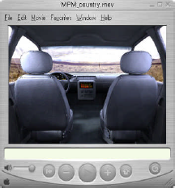

有四个可用的格式选项：
光栅图像
创建平面光栅图像。
QTVR 全景
创建 QuickTime 虚拟现实 (QTVR) 电影，该电影由取自同一点的某一位置的一系列视图，但视图的角度稍有不同。
这些图像可以组成单个图像以便于查看。
使用 QuickTime VR 查看器，可以对该图像进行平移，以便从所需的任何方向观看。

对于 QTVR 全景，需要使用视图→导航将眼点定位在场景中的某处。
QTVR 对象(低)/QTVR 对象(高)
创建 QuickTime 虚拟现实电影，该电影由取自围绕对象的不同点处某一静态对象的一系列视图构成。
低格式生成的图像帧数较少，这样输出文件的体积较小，但运动更加粗糙。